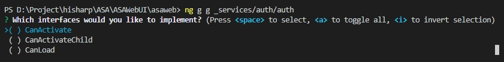

前言
目前因為在登入時，需要有認證的才可以看到網頁不然將其導到登入頁
路由守衛(Router Guards)
根據官方文件說明，路由守衛被應用的場合可能會是：
- 該使用者可能無權導航到目標元件
- 可能使用者得先登入(認證)
- 在顯示目標元件前，你可能要先儲存修變。
- 你可能要詢問使用者：你是否要放棄本次更改，而不幃儲存它們？
路由守衛的返回值
路由守衛會返回一個值，以控制路由器的行為：
- 如果它返回
true導航過程會繼續
- 如果它返回
false導航過程就終止，且使用者留在原地
- 當返回
false時，也可以告訴路由器導航到別處，例如可以導航到登入頁面
- 如果它返回
UrlTree則取消當前的導航，並且開如導航到返回的這個UrlTree
路由守䘗介面種類
路由器可以支援多種守衛介面:
- CanActive -處理導航到路由的情況
- CanActiveChild-處理導航到某子路由的情況
- CanDeactivete-來處理從當前路由離開的情況
- Resolve-在路由啟用之前獲取路由資料
- CanLoad-處理非同步導航到某特性模組的情況
路由守衛檢查的順序
根據手冊上的描述，在分層路由的每個級別上，可以設定多個守衛。
- 路由器會先按照最深的子路由，由下往上檢查的順序來檢查CanDeactivate()和CanActiveChild()守衛
- 然後它會按照從上到下的順序檢查CanActivate()守衛
- 如果特性模組是非同步載入的，在載入它之前還會檢查CanLoad()守衛
如果任何一個守衛返回flase其寫尚未完成的守衛會被取消，這樣整個導航就被取消了。
CanActivate
所以我們要使用CanAcrivate來保護後台的所有頁面不被未授權的使用者看到。
但是方更示範：
- 將使用
CanActivate並把路由守衛回傳值設為false
建立路由守衛
輸入指令，以下兩種指令則一即可
1
| ng generate guard _services/auth/auth
|
1
| ng g g _services/auth/auth
|
輸入後 Angular CLI 也會很貼心的問我們要使用哪一種

選擇 CanActivate 後按下 Enter ，發現 Angular CLI 建立了兩隻檔案，分別為測試檔以及主要檔案。
在src\app\_services\auth\auth.guard.ts來實作
1
2
3
4
5
6
7
8
9
10
11
12
13
14
15
| import { Injectable } from '@angular/core';
import { ActivatedRouteSnapshot, RouterStateSnapshot, UrlTree, CanActivate } from '@angular/router';
import { Observable } from 'rxjs';
@Injectable({
providedIn: 'root'
})
export class AuthGuard implements CanActivate {
canActivate(
next: ActivatedRouteSnapshot,
state: RouterStateSnapshot): boolean {
console.log('AuthGuard#canActivate 被觸發了');
return true;
}
}
|
這樣基本的路由守配置就完成了。
接著把剛才設定好的路由加入src\app\dashboard\dashboard-routing.module.ts內
1
2
3
4
5
6
7
8
9
10
11
12
13
14
15
16
17
18
19
20
21
22
23
24
25
26
27
28
29
30
| import { NgModule } from '@angular/core';
import { Routes, RouterModule } from '@angular/router';
import { DashboardComponent } from './dashboard.component';
import { ServerSettingComponent } from './page/server-setting/server-setting.component';
import { UserListComponent } from './page/user-list/user-list.component';
import { EmailEventListComponent } from './page/email-event-list/email-event-list.component';
import { AuthGuard } from '../_services/auth/auth.guard';
const routes: Routes = [
{
path: 'dashboard', component: DashboardComponent, canActivate: [AuthGuard],
children: [
{ path: '', redirectTo: 'serversetting', pathMatch: 'full' },
{ path: 'serversetting', component: ServerSettingComponent },
{ path: 'userlist', component: UserListComponent },
{ path: 'emaileventlist', component: EmailEventListComponent }
]
},
{ path: '**', redirectTo: '404' }
];
@NgModule({
imports: [RouterModule.forChild(routes)],
exports: [RouterModule]
})
export class DashboardRoutingModule { }
|
在進入dashboard的頁面在console裏會發現，有印出來AuthGuard#canActivate 被觸發了，代表成功了，
調整auth.guard內的canActivate()
1
2
3
4
5
6
7
8
9
10
11
12
13
14
15
16
17
| import { Injectable } from '@angular/core';
import { ActivatedRouteSnapshot, RouterStateSnapshot, UrlTree, CanActivate, Router } from '@angular/router';
import { Observable } from 'rxjs';
@Injectable({
providedIn: 'root'
})
export class AuthGuard implements CanActivate {
constructor(private router: Router) { }
canActivate(
next: ActivatedRouteSnapshot,
state: RouterStateSnapshot): boolean {
console.log('AuthGuard#canActivate 被觸發了, 你沒有授權！將跳轉回登入頁面');
this.router.navigate(['/login']);
return false;
}
}
|
參考資料
No.40 Angular Router 加上路由守衛
https://stackblitz.com/edit/angular-route-guards?file=src%2Fapp%2Fapp.component.html